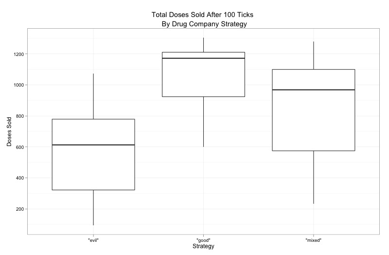
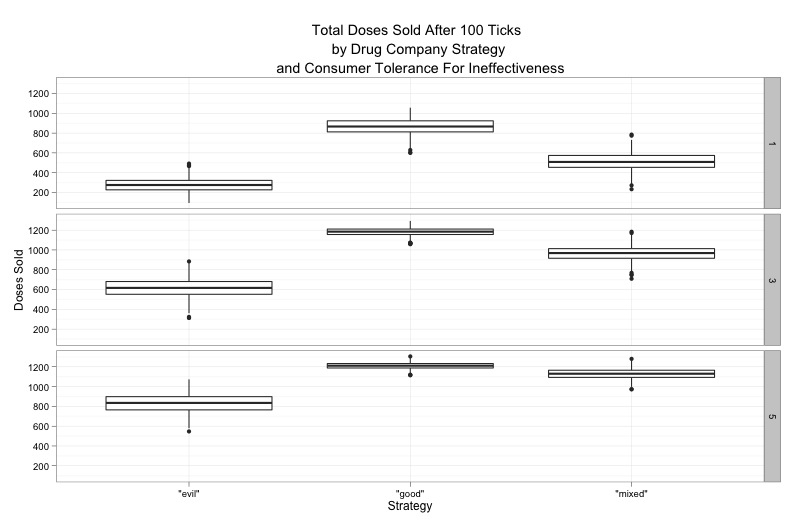
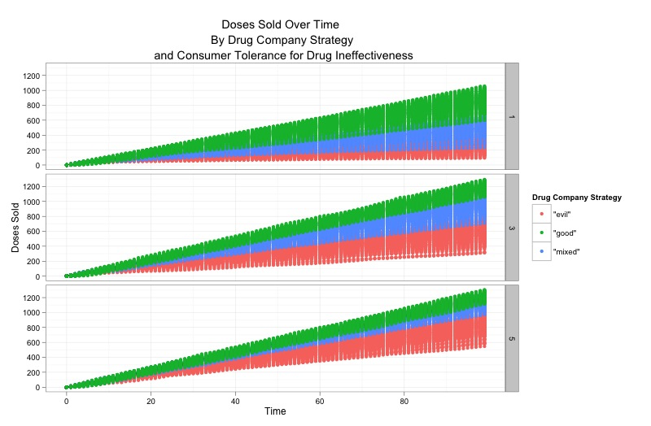

Lynnette Shaw and Steve Palley, 6/19/2013
Introduction
When new products are released on the market, there is often a notable information asymmetry between the producer and potential consumers with regard to the quality of that product. This low information situation can leave consumers in a situation that is quite vulnerable to strategically supplied misinformation. In the case of drugs, patients rely heavily on their doctors to mediate their lack of information about the potential value of the new product to themselves. While doctors do indeed have more information on the potential match of a new drug's claimed functionality and their patient's condition, they too also experience a similar lack of information about the true quality of the product.There are several pathways through which to overcome this asymmetry in the case of a new drug. The most straightforward is via doctors' direct experience with prescribing a drug and assessing its effectiveness through subsequent monitoring of their patients' progress. It is via this channel that patients who have not yet been prescribed a new medication can effectively gain accurate information on the product's quality without having to consume it personally. Another, less direct pathway via which accurate information can flow is patient word-of-mouth. Through this channel, other patients who are not being treated by the same doctor can give an individual information on the potential effectiveness of a drug. Interestingly, this word-of-mouth information may not be sufficient to lead a patient to actually buy the new drug as such purchases are controlled by the choices of their doctor. However, patients may still pass on this information to their doctors via requesting or inquiring about the drug. While such requests may only weakly impact a doctor's willingness to prescribe a given medication, they do act as means of supplying information from outside the doctor's own, localized patient-base.
Running in parallel to these avenues of accurate information, however, there are means through which strategic misinformation about a drug's quality can travel. A patient's dependency on her doctor for evaluating the potential appropriateness and effectiveness of a drug leaves her vulnerable to situations in which her doctor's self-interest run counter to her own. In specific, the practice of "kickbacks" some large drug companies have been known to use in order to influence doctors' prescription decisions can result in patients receiving very strongly weighted misinformation about a drug's true quality. Furthermore, while most doctors may be expected to be unwilling to prescribe a drug that is known to be of very poor quality, even in the presence of such incentivizing, we can expect that a more notable number of doctors would be susceptible to such influences if they have yet to determine that a drug is actually ineffective. Another avenue through which misinformation can potentially arrive to the consumer, advertising, bears a resemblance to that seen in the word-of-mouth pathway. As in that case, such advertisement originating information must be vetted by the doctor before it can be translated into an actual purchase. Nevertheless, when it is unclear as to whether a patient is inquiring into a drug based on what they have heard via word-of-mouth or advertising, the influence of this request on a doctor's willingness to prescribe an unknown drug can effectively mimic the effect that the patient's access to a wider set of accurate information would have had.
Given the informational conditions that surround the release of a new drug, drug companies face a number of possible strategies they could pursue in order to ensure demand for their product. The most straightforward, and honest, would be to invest in designing and manufacturing a very effective product and then rely on existing channels to distribute quality information to potential customers. Another set of possible strategies would involve focusing on infusing their market base with the types of information that are likely to lead to greater demand. This information need not necessarily be misleading, and in fact, legal institutions will often constrain the degree to which such information can be knowingly inaccurate. However, it is hard to dispute the existence of the potentially very large benefits a company can obtain from strategies such as "kickbacks" and advertising that misrepresents the actual effectiveness of a drug.
These different roads to ensuring demand for a new product, when taken in the context of limited budgets and the need to decide on how to allocate finite resources, translates into a significant decision for drug companies. Do they take the often substantially more expensive "high road" and invest primarily in making the best product possible? Or do they instead take the more deceptive but much less costly route of investing those resources in misleading marketing and doctor kickbacks?
Model Specification
To explore this question, we develop an model that gets at the different routes via which accurate and inaccurate information about a new drug can flow through a potential customer base. In this model, five "doctors" are tied to ten "patients" a piece. Every doctor begins with a 25% chance of diagnosing any given patient with something for which they might potentially be prescribed the new medication. After diagnosis, the doctors then decide whether they will prescribe the new drug to that patient based on a randomly assigned "willingness to prescribe" probability. Once they have been prescribed the drug, each patient then has a chance every turn it takes the drug to be "cured," based on a probability determined by the drug's "effectiveness" parameter. The number of turns a patient will wait to be cured after being prescribed a drug is determined by a "tolerance" parameter. If a patient is cured, then it will continue taking the drug for the rest of the model run (similar to what would happen in cases of chronic illnesses such as depression or regular migraines). If a patient is not cured within the number of allowed turns, it exits the prescribable population and remains there for the rest of the model run.Every turn, each "doctor's" willingness to prescribe is updated based on three sources of information:
- Effectiveness - If one its patients is cured by the drug, a doctor increases its probability of prescribing. If a patient is prescribed a drug but remains uncured, it decreases its probability.
- Kickbacks - Every run, each doctor may receive one "kickback" that notably increases its probability of prescribing. The likelihood of receiving the "kickback" is determined by an outside parameter (with more investment in kickbacks translating into an increased probability of all five doctors receiving a kickback during a given run and an increased probability of those kickbacks occurring early in the run)
- Requests - Each time a patient "requests" a drug, its doctor experiences a small increase in its willingness to prescribe.
Parameterization and Results
To parameterize our model runs, we combined three representative drug company strategies (good, mixed, and evil) with three levels of consumer and doctor tolerance for drug ineffectiveness (1, 3, and 5 doses), measuring the number of ineffective doses an individual patient would be willing to consume before exiting the treatable population. To generate the data displayed in the graphs below, we ran each permutation 500 times, for a total of 4500 runs. Each run consisted of 100 model cycles, or ticks.The good strategy consisted of a high level of relative spending on drug efficacy and low levels of spending on kickbacks and advertisements (.7, .2, and .1, measuring the respective probabilities of the drug curing the patient, a doctor receiving a kickback, and a patient being affected by advertising on a given turn). The mixed strategy presented a balanced approach (.4, .5, .5), while the evil strategy redistributed resources towards demand generation (.2, .8, .8).
For the experiment we froze the power of each factor at levels we believed to be both relatively and absolutely plausible. More specifically, a drug company kickback would raise the probability of a doctor prescribing the medication by .06; a patient request would raise it by .04; and a successful cure would raise it by .02.

Our main result shows that the good strategy outperformed the mixed strategy by 20% and the evil strategy by 100% in terms of average total doses sold. However, there was enough distributional overlap between the three strategies to demonstrate that the two non-good strategies are commercially viable, given that the expense of creating an effective drug is probably much greater than mounting an advertising blitz or dispensing kickbacks to doctors.

Decomposing the data by consumer and doctor tolerance for ineffective drugs reveals that the differences in sales outcomes are reduced as tolerance increases. Thus, if a patient or his or her doctor comes to believe that it can take some time for a new drug to take effect, or if a doctor is otherwise convinced to continue prescribing an ineffective drug for the maximum possible number of cycles, the mixed and evil strategies become even more attractive to drug companies. While we set this parameter exogenously, this result suggests another interesting causal pathway to investigate in a future version of the model: what if advertising and kickbacks directly affected tolerance in addition to doctor willingness to prescribe?

Finally, a time series graph of drug sales shows that variance in sales over time depends on an interaction between strategy and tolerance. When tolerance levels are low-for instance, when side effects are particularly severe-the company will be least certain about its sales results using the good strategy. Conversely, when tolerance levels are high, the evil strategy becomes the least certain. The mixed strategy appears to offer the least amount of uncertainty overall.
Because many pharmaceutical companies are publically traded, they probably prefer to minimize sales uncertainty, other things equal. Thus, even if it is possible to sell the most doses on average using the good strategy, it may actually be the mixed strategy that offers the most attractive combination between sales, cost and uncertainty. In other words, a mixed strategy may be the most consistently profitable, depending on the relative cost of R&D to demand creation.
Conclusion
This exercise tentatively suggests that drug companies need not concentrate their resources on developing effective drugs to be successful because social information can compensate for a lack of demonstrated efficacy. In fact, if generating social information is relatively inexpensive, it may very well be Big Pharma's preferred strategy. Who knows how many potential miracle cures drug companies are sitting on in the name of profit?There are many fruitful ways to extend our model towards further investigation. First, different kinds of diseases (communicable or not, chronic or curable) are likely to generate a different set of incentives. Second, introducing competition to the market by adding drug companies and allowing them to dynamically vary their strategies will probably lead to interesting results.